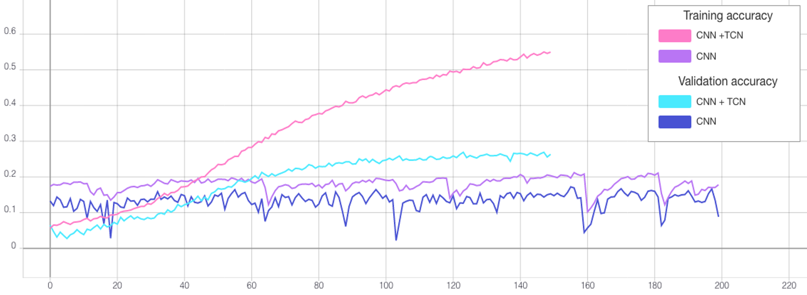

Introduction
The aim of this project is to create a classifier that can detect if a patient has one of several types of heart condition known as arrhythmia given a time series of an electrocardiogram (ECG) heartbeat. In particular, the focus is to use self-supervised and transfer learning to see if we can improve accuracy for two different network architectures.
Background
Arrhythmia is a type of heart condition concerning the rate or rhyme of the heart [1]. The most common method of detection is through analysis of electrocardiograms (Figure 1). This is a test that records the electrical signals of each heartbeat [2] to produce a graph of waves and intervals such as that depicted in Figure 1. The most prominent waves of a healthy ECG are:
- P wave: electrical activation (depolarization) of the atria by the sino-atrial node causing contraction of the upper chambers of the heart referred to as atrial systole.
- QRS complex: electrical stimulation of the ventricles leading to contraction of the lower chambers of the heart, i.e., ventricular systole.
- T wave: repolarization of the ventricles allowing the muscles of the heart’s chambers to relax.
Traditionally, arrhythmia was diagnosed by a person who analyses an ECG for identifiable traits such as irregularly shaped waves. However, this is often time consuming, prone to error and requires specialist training [3]. Therefore, the development of reliable classification models is of great benefit to medical staff and the well being of patients by improving the accuracy speed of diagnosis.

Objectives
- Explore the problem background, review literature and previous work on self-supervised learning, ECG classification and transfer learning
- Select clustering algorithms and network architecture
- Open and evaluate the selected dataset
- Perform data augmentation such as adding Gaussian noise to less frequent samples
- Applying clustering, determine the best result and save the cluster assignments as labels
- Implement a neural network and train to detect hidden features within the ECGs using the new labels
- Transfer the weights of the trained network to a new model and train for classification using the arrhythmia labels
- Optimize the chosen model
- Compare the model to a classifier with the same architecture without transferred weights
- Present results and evaluate findings
- Suggest future recommendations
Literature Review
Network Architectures
Convolution Neural Networks (CNN)
CNNs are deep neural networks consisting of convolutional, pooling and fully-connected layers. Initially low-level features are extracted, which are then used to form higher level features. Although they are most frequently used for image recognition, research such as that by J. Li et al. has shown that they can be successfully applied to classifying arrhythmia [8]. ECGs contain a one-dimensional signal, while CNNs are better suited to data with multiple dimensions. Therefore, they created a two-dimensional vector out of the rhythm and morphology of the heartbeats to feed into the model. This achieved a high accuracy of 99.1% for five of eight categories. However, it should be noted that the extensive pre-processing and experimentation detailed in this study is out of scope for this project.
Temporal convolutional networks (TCN)
TCNs are derived from CNNs and are a new breakthrough proposed in 2016 to process time-series information. The combination between casual convolutions, which prevent information leakage from the future to present, and diluted convolutions been shown to outperform recurrent nets such as LSTM in a vast range of tasks [17].
Long Short-Term Memory (LSTM)
LSTM is an extension of recurrent neural networks (RNN) with the addition of special units composed of a memory cell and input, output and forget gates. This architecture is capable of long-term pattern recognition unlike RNN. However, it is slower to train and requires more computational resources. In research by Singh et al. [7], three types of RNN were implemented with the goal of producing an accurate model for classifying arrhythmia from ECG time series. They explain that as CNN limits beats to a fixed length, the performance of RNN is more effective. The study’s results show that using LSTM rather than RNN with the same parameters increased accuracy from 85.4% to 88.1%.
Self-Attention
Attention is a technique that increases focus on important data while decreasing focus on less important data. This allows the network to devote more computing power to a small amount of important data. Though frequently associated with NLP and transformers, several studies have shown promising results using self-attention for time-series [18].
Semi-Supervised Learning
In a study by Sarkar et al., a semi-supervised approach is adapted for ECG emotion recognition [19]. This involved generating labels from augmented samples to train a CNN. The weights of the model were then transferred to a new model with the same architecture and all layers frozen except the output. Then the model was trained on labelled ECG data for emotion recognition achieving state of the art results in four categories. Other benefits of this approach include learning generalized features which can be used for a wide range of tasks, not just emotion recognition. Larger datasets may also be used as self-supervised learning doesn’t need annotated labels which are costly to produce.
Unsupervised Learning Algorithms
Unsupervised learning is a machine learning approach in which a model must determine patterns to classify unlabeled data. For this project, we intend to use clustering to create labels representing hidden features of ECG data. Three different types of clustering algorithms will be investigated: partitional, hierarchical and density-based.
K-Means
K-Means is an example of partitional clustering. It is a vector quantization algorithm that categories a set of n data samples into k clusters based purely on features found within the data. In the field of medicine, the manual labeling of large amounts of data is neither feasible nor cost effective as only certified medical professionals would be qualified to do so. Therefore, unsupervised learning techniques such as k-means have proven especially useful.
Agglomerative Clustering
Unlike k-means, agglomerative is a hierarchical clustering algorithm. The goal is to create an expanding tree of clusters, and such does not require a predefined number. Hierarchical algorithms can be one of two types: agglomerative or divisive. The main difference is their approach in creating the trees. Agglomerative algorithms start with one ‘cluster’ for each sample and progressively groups them based on similarities in the samples, whereas divisive starts from the top of the tree, splitting one cluster containing all samples.
DBSCAN
DBSCAN is a density-based clustering algorithm that groups points together based on distance and number of neighbors whilst marking points in low density regions as outliers. It is used to find associations and structures which are then used to find patterns and predict trends. DBSCAN can find randomly shaped clusters surrounded by other clusters.
Problem Analysis
Proposed Approach
For this project, we proposed to use unsupervised learning through clustering to assign new labels to all samples in a dataset of ECGs. CNN and bidirectional LSTM models will be trained to classify samples based upon these new labels. The best models will be saved, and the weights transferred to a new classifier with the same architecture as shown in Figure 2. All layers except the final layer are frozen and the new model trained to classify the original labels.

Proposed Network Architecture
The CNN is to be initially constructed with a 1D convolutional layer, max pooling, flatten layer and two fully connected layers. ReLU activation functions are applied between layers, followed by sigmoid for the output. The structure of the LSTM will be similar, though the conv and pool layers replaced by a bidirectional LSTM with 64 units. For both models, two additional variations of each architecture are to be tested. This includes either adding a TCN layer at the beginning, or a self-attention after the CNN or LSTM block.
Challenges
Measuring Clustering Performance
In the absence of a ground truth, it is difficult to measure how well each algorithm has performed. According to a study by Palacio-Niño et al. [16], the two types of validation metrics that are commonly combined are cohesion and separation. Often for partitional clustering algorithms such as k-means, a measure such as the silhouette coefficient is used, while for hierarchical algorithms the cophenetic coefficient is preferred. However, cohesion and separation measures often do not perform as well for density-based clustering like DBSCAN.
Class Imbalance
The label distribution of the dataset is largely unbalanced, with 83% of samples belonging to the non-ectopic class. Without either up-sampling or down-sampling, this can cause the model to converge to always predict the same class resulting in a misleadingly high accuracy as proven in Figure 3.
Transfer Learning
A significant part of the project involved comparing multiple architectures and configuring parameters to achieve the best classification performance. However, the team was limited in how much they could modify the arrhythmia classifier’s architecture as it needed to remain compatible with the pre-trained cluster model to apply transfer learning. While it was necessary to augment the data due to the significant imbalance, the model’s ability to detect patterns for certain arrhythmia conditions may have been reduced due to augmented samples not reflecting real world data.
Technical Issues
Colab
Implementation was done through two shared notebooks on Google Colab. However, there were several technical factors, which, when combined with time constraints, affected the outcome of the investigation. For example, long training times when adding LSTM layers, along with the large range of optimisable parameters, meant that we did not explore the LSTM architecture in as much depth as CNN and that compromises needed to be made to select reasonable parameters in the time available. In addition, runtime constraints sometimes caused the notebooks to disconnect upon training for a long time over many epochs.
Remote Working
Finally, due to the pandemic, the team faced the challenge of completing the project entirely remotely. This was tackled by holding online meetings twice a week, encouraging strong communication and progress checking between the team.
Implementation and Evaluation
Dataset
For the project we used the MIT-BIH Arrhythmia Dataset [4]. This is a popular, publicly available dataset produced in 1980 for the purpose of detecting types of arrhythmia. It was selected as it contains 109446 labelled samples which is sufficient to train a supervised deep neural network. Although each sample is assigned one of five classes, these are originally derived from 16 types of arrhythmia as outlined in Table 1.
| Label | Class Name | Explaination | Samples |
|---|---|---|---|
| 0/N | Non-ectotic beats | ECGs that have been determined to have a normal heartbeat. The patient does not have arrhythmia. | 90589 |
| 1/S | Supraventricular ectopic beats | ECGs show traits of either atrial premature beats, aberrated premature beats, nodal junction premature beats, or supraventricular premature beats [5]. | 2779 |
| 2/V | Ventricular ectopic beats | ECGs were determined as either premature ventricular contraction or ventricular escape beats [5]. | 7236 |
| 3/F | Fusion beats | ECGs have fusion of ventricular or fusion of normal beats [5]. | 803 |
| 4/Q | Unknown beats | ECGs contains a paced beat, fusion of paced and normal beats or an unclassified beat [5]. | 8039 |
Data Augmentation
Before clustering, more samples of the least frequent class are created. This was achieved by adding Gaussian noise to the non-padded part of the time-series, then normalizing to ensure amplitude is between 0 - 1 like the other samples (see Figure 4). Some of these new samples are randomly rounded to a lower number of decimal places to replicate a reduction in signal quality.

Clustering
Before training the first classification model, new labels were assigned to each sample through clustering. To improve the quality of the cluster assignments, we tested different parameters for the clustering algorithms. For each, the silhouette coefficient metric was used to quantify the closeness of samples within their respective clusters, with a larger value representing a greater success in clustering similar ECG samples.
K-Means and Agglomerative Clustering
For both k-means and agglomerative clustering, the number of clusters is set beforehand and so we tested different numbers of clusters. It is expected that a larger number of clusters would allow for a more granular and therefore more successful clustering output. However, an excessive number of clusters leads to each cluster containing too few samples for a classifier to effectively learn from. Therefore, a balance needed to be struck between the silhouette coefficient and number of clusters. Another factor is the evenness of distribution of samples across the clusters. If most samples were assigned to a single cluster, this would cause a great imbalance later when training a classifier. To tackle this, standard deviation of the cluster sizes was calculated and considered when selecting the final value for cluster number. It was decided that for both k-means and agglomerative, the number of clusters should lie between 10 and 20, and after some experimentation seen in table x, it was deemed that 19 clusters would be optimal when considering silhouette coefficient, average cluster size and standard deviation. Once the cluster the number was selected, applying PCA before clustering was tested to extract the most representative features. It was found that for both algorithms, using fewer principal components significantly improved silhouette score. However, this was at the cost of increasing standard deviation.
DBSCAN
Compared to k-means and agglomerative, DBSCAN produced very poor silhouette scores and unbalanced clusters. Attempting to optimize the silhouette score resulted in most samples being clustered into the same 3 to 5 clusters, and many samples not being assigned a cluster at all. Trying to optimize the number of samples being clustered also produced low silhouette scores.
Conclusion
We concluded that k-means with 15 principal components was to be chosen to assign the new labels as it is a good compromise between silhouette coefficient and standard deviation. Figure 5 demonstrates that most clusters are well defined with an identifiable shapes, while PCA and t-SNE graphs show cluster size and how similar clusters are to one another. These additional figures and tables of results are in the Appendix.

Cluster Classification
Train and Test Splits
After assigning a cluster to each sample, the maximum number of samples in each class is capped at 1000 and excess samples are removed. Again, noise augmented samples are created to provide more examples of the rarest clusters. Then data is split into by reserving 2000 of the non-augmented samples for testing and using the rest for training. This resulted in a fairly even label distribution among both assigned clusters and true labels as presented in Figure 6 and Figure 7. At first the models were training using 20% of the training data for validation. Then k-fold cross validation was run on the training data to find the best train-validation split.

CNN and Bidirectional LSTM
First variations of CNN and LSTM models, both with and without TCN and self-attention, were run over 50 epochs using the Adam optimizer, batch size 128 and no dropout. Then different learning rates, the AMSGrad variant of Adam and batch normalization were tested to see if this improved performance. The best result was TCN combined with CNN with 12.85% test accuracy, followed by the solo CNN with 11.1%. By comparison, the highest test accuracy of the LSTM was 8.6%, although it should be mentioned that we did not test parameters as extensively for this architecture as it was slow to run. In general, self-attention did not work well for either CNN or LSTM, while the TCN layer was detrimental to the LSTM.
Preventing Overfitting
When the two best models were run over 250 epochs, they achieved 97.25% and 98.15% train accuracy retrospectively (refer to Table 2). However, both validation and training accuracy were far lower suggesting the models were overfitting. Therefore, we tested varying rates of dropout and found that for both models this increased testing accuracy, with the best results highlighted yellow.
| Architecture | Dropout * | Train Loss | Validation Loss | Train Accuracy | Validation Accuracy | Test Accuracy |
|---|---|---|---|---|---|---|
| CNN | 0 | 0.0891 | 10.7169 | 97.35% | 24.37% | 9.35% |
| CNN | 0.3 | 0.9451 | 6.0790 | 65.57% | 20.25% | 9.55% |
| CNN | 0.7 | 2.4837 | 2.8896 | 18.57% | 13.03% | 9.75% |
| TCN + CNN | 0 | 0.0568 | 7.4145 | 98.15% | 29.29% | 12.15% |
| TCN + CNN | 0.3 | 0.6391 | 5.1540 | 77.56% | 28.23% | 13.05% |
| TCN + CNN | 0.7 | 2.5471 | 2.8282 | 17.18% | 12.69% | 9.55% |
Training the Optimised Models
After determining the best hyperparameters for the CNN and TCN, the models were trained over a greater number of epochs with early stopping (see Figure 8) and the state that reached the highest validation accuracy saved. The CNN was trained for a total of 550 epochs reaching the best validation accuracy at 506. By comparison, the TCN converged far quicker due to the lower dropout rate so was trained for only 150 epochs and the weights saved after 124 (see Table 3). The final test accuracies were 13.35% and 9.45% retrospectively as reflected by the confusion matrices presented in Figure 9.

| Architecture | Max Epochs | Best Epoch | Train Loss | Validation Loss | Train Accuracy | Validation Accuracy | Test Accuracy |
|---|---|---|---|---|---|---|---|
| TCN + CNN | 150 | 124 | 1.5053 | 3.2595 | 50.19% | 25.41% | 13.35% |
| CNN | 550 | 506 | 2.3957 | 2.8868 | 19.68% | 17.22% | 9.45% |
Arrhythmia Classification
Transfer Learning
After training the CNN and CNN + TCN to classify the clusters, the weights were saved to file and uploaded to GitHub. New models were then made with the same architectures and weights of the pre-trained models transferred. For each the final layer was removed and replaced with a new fully connected layer with 5 outputs. This is because the previous models were designed to predict 19 cluster labels, while the new models predict the 5 labels of the original data. The new models were then trained over 50 epochs both with and without freezing the weights of all layers, except the output layer, and compared against the same architecture without weight transfer. Then the best model optimised further through testing different batch sizes and trained over 200 epochs. Additional tables are in the Appendix.
CNN Performance
Without transfer learning, the CNN achieved a decent accuracy of 91.4% (see Figure 10 and 11). However, transferring the weights of the pre-trained CNN cluster classifier was detrimental to loss and accuracy both with and without freezing the layers (refer to Table 4). Perhaps this is because the pre-trained CNN classifier did not perform well at learning the clusters (Table 3) and so this did not help the new model extract useful features. Therefore, we did not attempt any further optimisation of this model.
| Architecture | Epochs | Freeze Layers | Dropout * | Batch Size | Train Loss | Validation Loss | Train Accuracy | Validation Accuracy | Test Accuracy |
|---|---|---|---|---|---|---|---|---|---|
| CNN | 50 | True | 0.7 | 128 | 0.3356 | 0.2525 | 87.01% | 91.01% | 88.5% |
| CNN | 50 | False | 0.7 | 128 | 0.3935 | 0.2892 | 85.41% | 89.79% | 87.2% |
| CNN | 50 | N/A | 0.7 | 128 | 0.2199 | 0.1795 | 91.22% | 93.49% | 91.4% |
| TCN + CNN | 50 | True | 0.3 | 128 | 0.0414 | 0.0568 | 98.39% | 98.47% | 96.3% |
| TCN + CNN | 50 | False | 0.3 | 128 | 0.0472 | 0.0514 | 98.42% | 98.52% | 95.95% |
| TCN + CNN | 50 | N/A | 0.3 | 128 | 0.0436 | 0.0604 | 98.48% | 98.15% | 96.3% |
| TCN + CNN | 50 | True | 0.3 | 8 | 0.2875 | 0.1612 | 90.24% | 94.48% | 94.15% |
| TCN + CNN | 50 | True | 0.3 | 32 | 0.0632 | 0.0598 | 97.8% | 98.47% | 96.85% |
| TCN + CNN | 50 | True | 0.3 | 256 | 0.0660 | 0.0829 | 97.84% | 97.67% | 95.5% |
| TCN + CNN | 50 | N/A | 0.3 | 32 | 0.626 | 0.0654 | 97.84% | 97.92% | 96.7% |
| TCN + CNN | 200 | True | 0.3 | 32 | 0.0165 | 0.0437 | 99.49% | 98.78% | 96.95% |
| TCN + CNN | 200 | N/A | 0.3 | 128 | 0.0176 | 0.0573 | 99.38% | 99.07% | 96.95% |
| TCN + CNN | 200 | N/A | 0.3 | 32 | 0.0216 | 0.0648 | 99.27% | 98.74% | 97% |
TCN Performance
The TCN outperformed the CNN in each experiment. When training over 50 epochs with batch size 128, both the model with transferred frozen layers (Figure 12), and the model without transfer learning achieved a high accuracy of 96.3% (see Table 4). Testing different batch sizes revealed that this could be further improved, with a batch size of 32 performing best for both over 50 epochs. Then the models were trained over 200 epochs using this batch size. The highest test accuracy was impressive at 97% from the TCN without transferred weights. However, the performance of the frozen TCN was very similar at 96.95% (see Figure 10) and this model did in fact achieve a significantly lower training and validation loss.
Discussions and Findings
Project Summary
The objective was to create a classifier to detect heart conditions from ECG time-series data. To achieve this, several techniques were explored, with focus on developing a semi-supervised strategy. The chosen approach involved first applying unsupervised clustering to the data, training a model using the clustered data, and finally applying the model to a supervised problem using transfer learning.
Clustering
After contrasting various clustering techniques, k-means was chosen divide each ECG into 19 clusters. To improve cluster distribution, PCA with 15 principal components was applied to each time-series before clustering.
Cluster Classification
Next a classifier was created to predict the newly assigned labels for the clustered data. For this model, several design choices needed to be made, such as the network architecture and the best parameters. Among the networks considered for our cluster classifier, the most prominent one is TCN, a new state-of-the-art model designed to perform exceptionally well on time-series data, although not previously having been used much on ECG-type data. Similarly, other layer variations were tested, such as self-attention layers, which did not positively impact the training outcome and was consequently discarded. The experiments suggest that the TCN-CNN architecture is the optimal combination as it not only meets but also exceeds expectations, showing better results than any other candidate model.
Arrhythmia Classification
The final classifier in our solution learns from the original labelled dataset, and transfer learning incorporates the weights of the cluster classifier to improve its performance. To assess the performance of our solution, a fully-supervised model using the same architectures (CNN, TCN, LSTM) as the supervised classifier in our semi-supervised approach was also implemented as a point of comparison. While the results from both approaches were similar, this demonstrates the potential of our approach, which will stand to benefit in the context of medical imaging, where most data is unlabeled.
Code, Data and Models
The ECG time-series data is avaliable from Kaggle, while the Python notebooks, dataset of ECGs with cluster assignments and trained model weights made in this project are freely avaliable and to download from our GitHub repository.
Future Suggestions
To fully flesh out the prospective of our proposed semi-supervised solution, there are several avenues to explore in future work. To improve performance, additional efforts can be made to increase the number of training samples, whether through exploring and implementing different augmentation techniques or adapting new datasets to suit our architecture. It is also likely that accuracy could be increased further with additional hyperparameter tuning.
Contributions
As each group member had different skills and interests, work was divided as follows:
- Tom: Team leader, notebook development, website creator, background research and results write up, proposed network diagram
- Lavinia: Time series augmentation research, clustering and network optimisation, recording classifier results and graphs
- Dave: Clustering research, initial data augmentation experimentation, clustering parameter optimisation, semi-supervised classification experimentation
- Will: Network architecture research, DBSCAN optimisation, LSTM experimentation
References
- [1] NIH, Arrhythmia. National Heart Lung and Blood Institute. Available at: https://www.nhlbi.nih.gov/health-topics/arrhythmia [Accessed March 21, 2021].
- [2] NHS, Electrocardiogram (ECG). National Health Service. Available at: https://www.nhs.uk/conditions/electrocardiogram/ [Accessed March 24, 2021].
- [3] Luz, E.J.D.S., Schwartz, W.R., Cámara-Chávez, G. and Menotti, D., 2016. ECG-based heartbeat classification for arrhythmia detection: A survey. Computer methods and programs in biomedicine, 127, pp.144-164.
- [4] Moody, G. & Mark, R., 2005. MIT-BIH Arrhythmia Database. MIT-BIH Arrhythmia Database v1.0.0. Available at: https://www.physionet.org/content/mitdb/1.0.0/ [Accessed March 30, 2021].
- [5] Das, M.K. and Ari, S., 2014. ECG beats classification using mixture of features. International scholarly research notices, 2014.
- [6] AliveCor, What is an ECG? AliveCor. Available at: https://www.alivecor.com/education/ecg.html [Accessed March 30, 2021].
- [7] Singh, S., Pandey, S.K., Pawar, U. and Janghel, R.R., 2018. Classification of ECG arrhythmia using recurrent neural networks. Procedia computer science, 132, pp.1290-1297.
- [8] Li, J., Si, Y., Xu, T. and Jiang, S., 2018. Deep convolutional neural network based ECG classification system using information fusion and one-hot encoding techniques. Mathematical Problems in Engineering, 2018.
- [9] Hallström, E., How to Build a Recurrent Neural Network in TensorFlow. KDnuggets. Available at: https://www.kdnuggets.com/2017/04/build-recurrent-neural-network-tensorflow.html [Accessed April 9, 2021].
- [10] Melcher, K., 2018. "Once Upon A Time ... " by LSTM Network. KNIME. Available at: https://www.knime.com/blog/text-generation-with-lstm [Accessed April 9, 2021].
- [11] Esling, P. and Agon, C., 2012. Time-series data mining. ACM Computing Surveys (CSUR), 45(1), pp.1-34.
- [12] Fawaz, H.I., Forestier, G., Weber, J., Idoumghar, L. and Muller, P.A., 2019. Deep learning for time series classification: a review. Data Mining and Knowledge Discovery, 33(4), pp.917-963.
- [13] Wen, Q., Sun, L., Song, X., Gao, J., Wang, X. and Xu, H., 2020. Time series data augmentation for deep learning: A survey. arXiv preprint arXiv:2002.12478.
- [14] Le Guennec, A., Malinowski, S. and Tavenard, R., 2016, September. Data augmentation for time series classification using convolutional neural networks. In ECML/PKDD workshop on advanced analytics and learning on temporal data.
- [15] Pan, S.J. and Yang, Q., 2009. A survey on transfer learning. IEEE Transactions on knowledge and data engineering, 22(10), pp.1345-1359.
- [16] Palacio-Niño, J.O. and Berzal, F., 2019. Evaluation metrics for unsupervised learning algorithms. arXiv preprint arXiv:1905.05667.
- [17] Philippe Remy, keras-tcn. GitHub. Available at: https://github.com/philipperemy/keras-tcn [Accessed April 23, 2021].
- [18] Isaac Godfried, 2019. Attention for time series forecasting and classification. Available at: https://towardsdatascience.com/attention-for-time-series-classification-and-forecasting-261723e0006d
- [19] P. Sarkar and A. Etemad, 2020. Self-supervised ECG Representation Learning for Emotion Recognition. Available at: https://arxiv.org/pdf/2002.03898.pdf
Appendix
Clustering
K-Means Clustering
For k-means, different numbers of clusters were tested to find the optimal number.
As PCA led to different silhouette coefficients each time, each configuration with principal components was run 20 times and the average silhouette coefficient and standard deviation values recorded in Table 5.
The parameters selected to produce the labels for the cluster classifiers are highlighted yellow.
Number of Clusters
Principal Components
Silhouette Coefficient
Standard Deviation (σ)
10
N/A
0.1537
475.48
11
N/A
0.1533
470.39
12
N/A
0.1609
489.05
13
N/A
0.1693
453.25
14
N/A
0.1684
459.58
15
N/A
0.1675
433.51
16
N/A
0.1746
400.89
17
N/A
0.1804
335.57
18
N/A
0.1796
320.82
19
N/A
0.1825
279.0
20
N/A
0.1745
246.72
19
50
0.1794
305.14
19
30
0.1972
290.04
19
25
0.1943
206.37
19
15
0.2472B
335.03
19
5
0.3185
406.04
19
2
0.3729
433.12
19
1
0.5162
378.23
Agglomerative Hierarchical Clustering
Like k-means, different numbers of clustered were tested and the results documented in Table 6. This algorithm was not selected to create the labels for the cluster classifier.
| Number of Clusters | Principal Components | Silhouette Coefficient | Standard Deviation (σ) |
|---|---|---|---|
| 10 | N/A | 0.1609 | 738.09 |
| 11 | N/A | 0.1554 | 627.64 |
| 12 | N/A | 0.1630 | 657.01 |
| 13 | N/A | 0.1616 | 654.47 |
| 14 | N/A | 0.1641 | 556.93 |
| 15 | N/A | 0.1603 | 477.62 |
| 16 | N/A | 0.1661 | 359.58 |
| 17 | N/A | 0.1661 | 335.50 |
| 18 | N/A | 0.1676 | 352.99 |
| 19 | N/A | 0.1693 | 370.99 |
| 20 | N/A | 0.1640 | 342.27 |
| 19 | 50 | 0.1804 | 351.66 |
| 19 | 20 | 0.2116 | 352.02 |
| 19 | 5 | 0.2727 | 365.59 |
DBSCAN Clustering
For DBSCAN, parameters epsilon and minimum point were tested, and the results documented in Table 7.
| Epsilon (ε) | Minimum Points | Principal Components | Silhouette Coefficient | Number of Clusters | Number Unclustered |
|---|---|---|---|---|---|
| 0.5 (default) | 5 (default) | 70 | -0.26928 | 168 | 7175 |
| 0.3 | 5 | N/A | -0.41287 | 78 | 9798 |
| 0.3 | 16 | N/A | -0.11727 | 33 | 4560 |
| 0.7 | 5 | 70 | -0.12748 | 129 | 3611 |
| 0. | 5 | 70 | B | B | B |
| 0.7 | 8 | 70 | -0.08927 | 75 | 4511 |
| 0.7 | 16 | 70 | -0.08875 | 32 | 6001 |
| 0.9 | 5 | 70 | -0.23484 | 85 | 2162 |
| 0.9 | 8 | 70 | -0.21898 | 44 | 2761 |
| 0.9 | 16 | 70 | -0.1172 | 33 | 4560 |
Classifiers
Bidirectional LSTM Cluster Classifier
Variations of the bidirectional LSTM were trained both with and without the TCN layer and self-attention to predict the cluster labels of each ECG and the results documented in Table 8.
| Architecture | Learning Rate (θ) | AMSGrad | Batch Normalisation | Train Loss | Validation Loss | Train Accuracy | Validation Accuracy | Test Accuracy |
|---|---|---|---|---|---|---|---|---|
| BiLSTM | 0.001 | False | False | 2.3956 | 2.8946 | 23.96% | 15.28% | 8.35% |
| BiLSTM | 0.001 | False | True | 2.7506 | 2.9333 | 13.68% | 10.2% | 7.85% |
| BiLSTM | 0.01 | False | False | 2.9066 | 3.0084 | 6.86% | 0.82% | 8.1% |
| BiLSTM | 0.001 | True | False | 2.4135 | 2.8414 | 23.24% | 16.39% | 8.6% |
| TCN + BiLSTM | 0.001 | False | False | 2.5949 | 2.8950 | 18.55% | 12.98% | 7.75% |
| BiLSTM + self-attention | 0.001 | False | False | 2.9072 | 3.0014 | 6.8% | 1.5% | 8.55% |
CNN Cluster Classifier
Variations of the CNN were trained both with and without the TCN layer and self-attention to predict the cluster labels of each ECG and the results documented in Table 9.
| Architecture | Learning Rate (θ) | AMSGrad | Batch Normalisation | Train Loss | Validation Loss | Train Accuracy | Validation Accuracy | Test Accuracy |
|---|---|---|---|---|---|---|---|---|
| CNN | 0.001 | False | False | 2.6842 | 2.9459 | 13.74% | 8.01% | 6.7% |
| CNN | 0.001 | False | True | 0.8245 | 4.2888 | 74.78% | 23.92% | 9.95% |
| CNN | 0.01 | False | True | 0.8000 | 5.5327 | 74.75% | 24.77% | 11.1% |
| CNN | 0.001 | True | True | 0.7387 | 4.2511 | 77.35% | 23.74% | 10.05% |
| TCN + CNN | 0.001 | False | False | 2.9057 | 3.0054 | 7.13% | 0.82% | 8.05% |
| TCN + CNN | 0.001 | False | True | 1.0128 | 3.2032 | 68.32% | 29.9% | 12.85% |
| TCN + CNN | 0.01 | False | True | 1.5354 | 3.2391 | 51.2% | 25.03% | 11.55% |
| TCN + CNN | 0.001 | True | True | 1.0634 | 3.2680 | 66.91% | 28.21% | 12.85% |
| CNN + self-attention | 0.001 | False | False | 2.8974 | 2.9724 | 7.4% | 5.82% | 8.5% |
| CNN + self-attention | 0.001 | False | True | 2.4908 | 3.1187 | 23.39% | 11.66% | 6.95% |
| CNN + self-attention | 0.01 | False | False | 2.9067 | 3.0094 | 6.81% | 0.82% | 8.1% |
| CNN + self-attention | 0.001 | True | False | 2.9026 | 2.9693 | 7.13% | 3.3% | 7.55% |
F-Fold Cross Validation
Before training the final cluster classifiers in Table 2, 5-fold cross validation was run over 15 epochs to find the best train-validation splits for the CNN and TCN-CNN models. For both (Table 10 and 11), fold 3 performed best achieving 2.9282 and 2.9281 loss retrospectively.
| Fold | Train Loss | Validation Loss | Train Accuracy | Validation Accuracy |
|---|---|---|---|---|
| 1 | 2.9220 | 2.9285 | 6.44% | 4.66% |
| 2 | 2.9233 | 2.9347 | 6.48% | 4.66% |
| 3 | 2.9220 | 2.9282 | 6.48% | 4.69% |
| 4 | 2.9128 | 2.9768 | 6.63% | 1.12% |
| 5 | 2.9109 | 2.9870 | 6.75% | 0.76% |
| Fold | Train Loss | Validation Loss | Train Accuracy | Validation Accuracy |
|---|---|---|---|---|
| 1 | 2.9220 | 2.9285 | 6.44% | 4.66% |
| 2 | 2.9233 | 2.9347 | 6.48% | 4.66% |
| 3 | 2.9220 | 2.9282 | 6.48% | 4.69% |
| 4 | 2.9128 | 2.9768 | 6.63% | 1.12% |
| 5 | 2.9109 | 2.9870 | 6.75% | 0.76% |